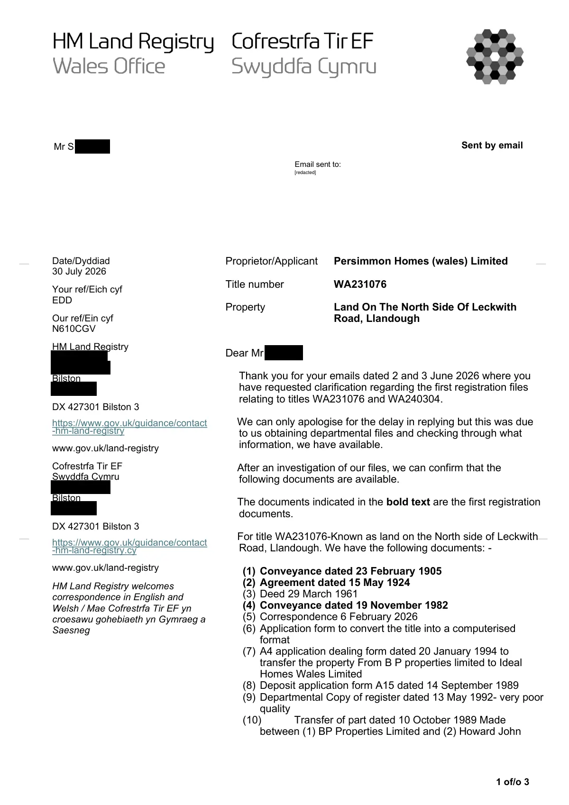

GHF-E106-R104-A1 correspondence (no disclosure)
Schedule of first-registration documents WA231076 / WA240304

Transcript
1 of/o 3 Sent by email Date/Dyddiad 30 July 2026 Your ref/Eich cyf EDD Our ref/Ein cyf N610CGV HM Land Registry [address redacted] Bilston [address redacted] DX 427301 Bilston 3 https://www.gov.uk/guidance/contact -hm-land-registry www.gov.uk/land-registry Cofrestrfa Tir EF Swyddfa Cymru [address redacted] Bilston [address redacted] DX 427301 Bilston 3 https://www.gov.uk/guidance/contact -hm-land-registry.cy www.gov.uk/land-registry HM Land Registry welcomes correspondence in English and Welsh / Mae Cofrestrfa Tir EF yn croesawu gohebiaeth yn Gymraeg a Saesneg Proprietor/Applicant Persimmon Homes (wales) Limited Title number WA231076 Property Land On The North Side Of Leckwith Road, Llandough Dear Requester Thank you for your emails dated 2 and 3 June 2026 where you have requested clarification regarding the first registration files relating to titles WA231076 and WA240304. We can only apologise for the delay in replying but this was due to us obtaining departmental files and checking through what information, we have available. After an investigation of our files, we can confirm that the
Read more
following documents are available.
The documents indicated in the bold text are the first registration
documents.
For title WA231076-Known as land on the North side of Leckwith
Road, Llandough. We have the following documents: -
(1) Conveyance dated 23 February 1905
(2) Agreement dated 15 May 1924
(3) Deed 29 March 1961
(4) Conveyance dated 19 November 1982
(5) Correspondence 6 February 2026
(6) Application form to convert the title into a computerised
format
(7) A4 application dealing form dated 20 January 1994 to
transfer the property From B P properties limited to Ideal
Homes Wales Limited
(8) Deposit application form A15 dated 14 September 1989
(9) Departmental Copy of register dated 13 May 1992- very poor
quality
(10)
Transfer of part dated 10 October 1989 Made
between (1) BP Properties Limited and (2) Howard John
Requester
Email sent to:
__
__
__
__
[redacted]
2 of/o 3
Gough and Sylvia Mary Gough
(11)
Transfer dated 3 December 1993 Made between (1)
BP Properties Limited and (2) Ideal Homes Limited
(12)
Application form dated 20 January 1994 Internal
application form to correct the title
(13)
Application form 1E dated 30 November 1982-was
the application for that gave rise to the first
registration
(14)
Application form to amalgamate the title dated 2
February 1987
(15)
Application form A3 dated 13 January 1984
(16)
Customer correspondence dated 12 May 1983
several letters from Linklaters & Paynes and LR
(17)
A13- DL-List of documents lodged with first
registration
(18)
Letter from Linklaters & Paines undated to LR
(19)
A28. Draft entries application form
(20)
Customer correspondence dated 12 October 1995
from Ideal Homes
(21)
Customer correspondence LR to Ideal Homes PLC
(22)
Application form dated 13 October 1994 to correct
the title.
(23)
Copy of Register edition dated 13 January 1984
(24)
Copy of register edition date 20 January 1994
(25)
Copy of register edition date 20 January 1994
(26)
Copy of register edition date 20 January 1994
(27)
Copy of register edition date 13 October 1994
(28)
Copy of register edition date 5 January 1995
(29)
Customer Correspondence dated 18 March 1996
from Persimmon Homes
(30)
Dealing Application form header dated 19 March
1996
For title WA240304 which the title has been since closed. we
have the following documents:-
(1) Plan to Conveyance dated 23 May 1975
(2) Application form for Cis for amalgamation-no annotation on
it.
(3) Internal CIS application form
(4) Customer correspondence dated 12 April 1983
(5) Letters undated-Several letters from Linklaters and Paines to
HM Land Registry
(6) Application form A28
(7) Application form D23 (inside exam) and letter dated 8 April
1983 from Linklaters & Paines
(8) MB1 internal application form.
(9) Old title Plan for WA240304
(10)
Copy of Register edition date 23 February 1983
(11)
Form 1C application form from Linklaters & Paines
(12)
Conveyance 23 May 1975
(13)
Plan to conveyance dated 23 February 1975
We can confirm that all these documents are held on file and will
remain on file. They are all open to public inspection if require
copies of them.
3 of/o 3
If you would like to request any copies of any of the documents,
please see the following information on how to apply for them.
You can apply for copies of deeds and documents, that we hold
by completing form OC2 and sending it to us by post.
When filling in the form, be sure to:
•
enter the details of the land or property that you would like to
find out about
•
enter the title number (our unique identifying reference)
•
enter your own details into the applicant fields
•
provide as much detail as you can about the deeds or
documents you want copies of
Fees are payable - please see the Fee Guide.
Fees are £11 per document
Cheques/postal orders should be made payable to HM Land
Registry. We do not currently accept card payments for
applications.
Please send the completed application to:
HM Land Registry
Citizen Centre
[address redacted]
Bilston
[address redacted]
You will find further information in Get information about property
and land
We hope this reply is of assistance.
If you would like to discuss this correspondence or require it in an
alternative format please contact us, quoting our reference.
Yours faithfully,
S. G. Haste
Wales office
Land Registry
[phone redacted]Artifact description
Automated notice delivers an attached official letter as a PDF requiring Adobe Reader to view.
| Catalogue ID | GHF-E106-R104-A1 |
|---|---|
| What it is | PDF document from HM Land Registry. Attached to an email received on 30 July 2026, their reference WA231076/A/216/SH. 3 pages. |
| From | HM Land Registry |
| Email received | 30 July 2026 |
| Their reference | WA231076/A/216/SH |
| Pages | 3 |
| File | Correspondence.pdf (202 KB) |
| State | Read |
Our integration
Part of the records enquiry thread with HM Land Registry opened 30 July 2026. The thread's standing classification is “correspondence (no disclosure)”. Statutory time: no statutory deadline.
Concern to test: whether this reply answers the question as asked, or a narrower one. Not checked against the original request wording here.
What cuts against the case: the body disclosed material, which is the opposite of a refusal; what it disclosed is shown here as sent.
Related: The covering email · What They Don’t Say: WTDS-4bf76b66-1 · EV-0361 in the evidence catalogue · Timeline · Disclosure Dartboard